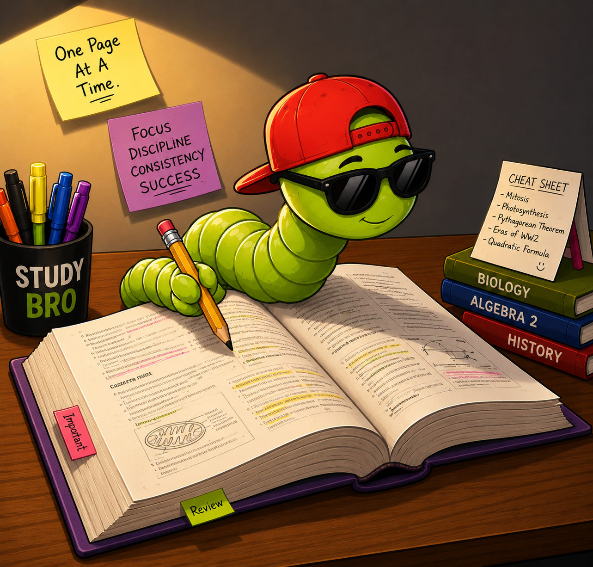

Send your material
Notes, slides, guides, or readings. We work from what your class is actually covering.
Send us the material. Get back a focused study deck that helps you learn it, test it, and make it your own.
Your course. Your wording. Your private edits.

The whole process
Notes, slides, guides, or readings. We work from what your class is actually covering.
Your material becomes clear, study-ready cards—with useful images where they genuinely help.
Open your private library, choose a study mode, and customize anything to match how you learn.
Study your way
Memory isn't one-size-fits-all. Move between focused review, active recall, fast matching, and exam-style questions.
Go to your decks →Build the foundation, one clean concept at a time.
↻Practice active recall with smart multiple choice.
AMake connections quickly with a timed challenge.
↔Find the gaps before the real exam finds them.
✓Produces energy for the cell.
Produces ATP through cellular respiration.
✓ Saved just for youBuilt to become yours
Add your own wording, hide cards you already know, or create extra cards. When the master deck improves, untouched cards update automatically—and your personal edits stay yours.
Ready when you are